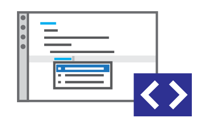
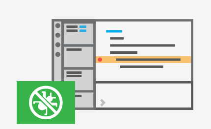

|  |
Meet IntelliSense
Go Beyond syntax highlighting and autocomplete with IntelliSense, whitch |
|
Print statement debugging is a thing of the past.
Debug code right from editor.Lauch or attach to your running apps and |
 |